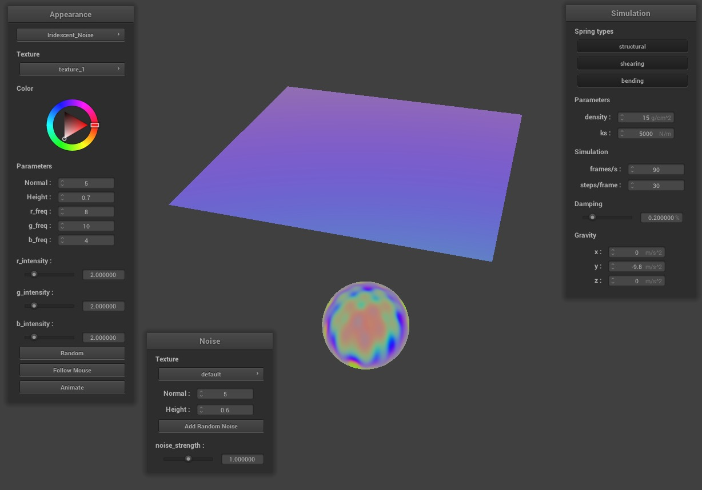
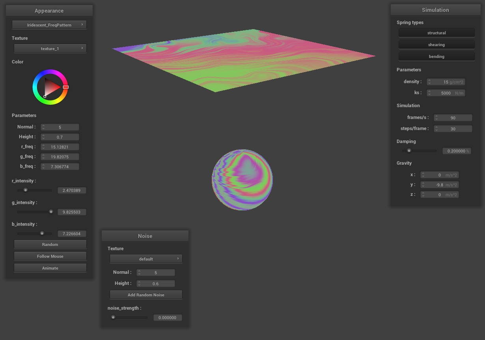
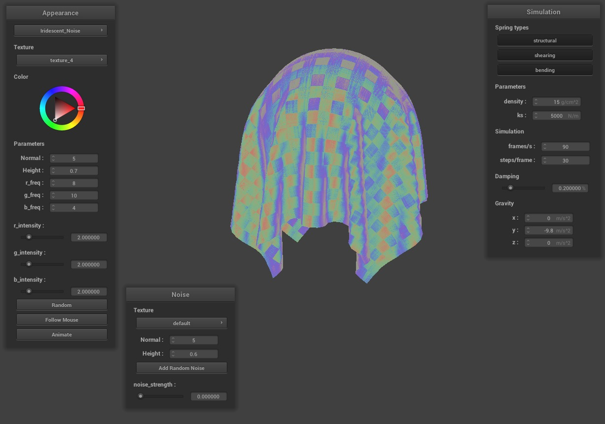

Abstract
In this project, we implemented iridescence by using our Project 4 code to create iridescence shaders. We extended upon some ideas we came across in rendering iridescence papers and examples on ShaderToy. The basis of our iridescence is accomplished through an equation that takes into account the angle between the camera and surface normal, channel frequency, and channel intensity that created circles of iridescence. We then built upon this to have an interactive environment in the Project 4 GUI where a user can see different variants of iridescent shaders and manipulate the iridescence by changing the colors and their intensity, adding textures, changing noise, adding animation, and moving the camera position.
Technical Approach
In this project, we implemented iridescence by using our Project 4 code to create iridescence shaders. We extended upon some ideas we came across in rendering iridescence papers and examples on ShaderToy. The basis of our iridescence is accomplished through an equation that takes into account the angle between the camera and surface normal, channel frequency, and channel intensity that created circles of iridescence. We then built upon this to have an interactive environment in the Project 4 GUI where a user can see different variants of iridescent shaders and manipulate the iridescence by changing the colors and their intensity, adding textures, changing noise, adding animation, and moving the camera position.
Iridescence Calculation
Since we know that iridescence changes color based on the angle between the viewing vector and the surface normal, we can design our formula to model this. For each color channel, we can therefore calculate its strength using this general equation:
color_channel = sin(|camera ⋅ normal| * channel_freq) * (channel_intensity) + (channel_intensity)
The formula takes the dot product to calculate the angle between the camera and normal vector, and applies a sin function to it. Broadly, the 'sin' is relevant since the iridescence effect is being simulated as a repeated pattern of concentric circles, with different colors having different intensities/frequencies. The absolute value is also significant because the normal of the vertex is unidirectional, and we want the iridescent effect to be consistent on both sides of the cloth. Once we calculate pure iridescence, we can finally overlay it with another shader, such as a mirror, to create combinations of the two.
The parameters of channel_freq, and channel_intensity can be modified via the gui. Channel_freq adjusts how often the color channel reaches its peak as the perspective angle shifts from 0° to 90°. Channel_intensity on the other hand adjusts the strength of the particular color channel relative to the other channels.
Noise
Since iridescence calculations rely on the angle between the vertex normal and camera vector, we can model changes in texture by first calculating the displaced normal for the vertex, and using that in place of the default normal when generating iridescence. This general idea can be applied to both noise generations that we implemented.
Noise Mapping
Noise mapping is very similar to texture mapping wherein we first use a pre-generated noise texture and adjust the surface normals accordingly. This is done similar to Project 4, where we use a Tangent-Bitangent-Normal matrix to modify the normal, thereby adding variation to the iridescence calculations.
Naive/Formulaic Noise
The second noise implemented was formulaic noise. The noise is calculated as a complex trigonometric function with respect to the surface normal, and a random sequence of numbers. For every fragment, the noise is first calculated, and then applied later during the process of generating the iridescence.
Both noise mapping and formulaic noise are calculated applied only to the iridescent portion of the shader, and the rest of the shader uses the original default normal for other calculations such as bump, or texture mapping.
GUI Modifications
For the parameter modification part of our project we wanted to make each factor of the iridescence modifiable by the user. To do this we created new GUI elements to let the user control the frequencies and intensities of different color channels in the simulation. In order to do this we searched through the existing codebase of the GUI and pattern-matched how to create sliders and change shader inputs. One of the last features added was a 'randomize' button which randomized all of the possible iridescence inputs other than base color. Many more GUI modifications were made as a result of different shaders being added. Examples include a “noise window” for iridescent noise shading, better pattern selection menus that accounted for newly added textures, and buttons that would change the view of the iridescence effect (Follow Mouse and Animate).
Follow Mouse
Following the mouse had to do with editing every shader file to include code that would allow the user to change the iridescence’s viewing vector from the camera to the user’s mouse. Because a mouse_x and mouse_y variable were already included and in use from Project 4’s mouse interaction, we just had to pass those locations in, dependent on whether the user clicked the “Follow mouse” GUI button. From there, we were able to use the mouse location in the iridescence formula, thus seeing the effects of iridescence change as the user moved their mouse.
Animation
Another feature we implemented was animation, or pseudo-animation in our case. The goal behind this feature was to have a shader where the pattern of the iridescence is constantly moving. The first step in accomplishing this was developing a iridescence shader that is dependent on some user input (color channel frequencies in this case). The behavior of the shader borrowed from this ShaderToy example and was modified to fit our codebase and parameters to influence the iridescence pattern.
Once the ‘random’ iridescent patterns seemed to be working, the next step was to find a way to change the color channel frequencies over time at the press of a button. An animate button was created and toggling this button would trigger an infinite loop where color frequencies would be smoothly/steadily changing. After the values change, the scene would update and thus the illusion of animation would be a success. However, the button callback was not able to handle an infinite loop, since the action of the button needed to finish before anything was updated to the shader. We attempted to bind this behavior to a hotkey, but the same problem presented itself. Since infinite loops would not work, the next best solution was to tie frequency changes to a constantly updating input like mouse movement! Every time the mouse was moved, that would trigger an update in the color frequencies that would cause the shader to slightly shift. As such, animation was possible with mouse movement. Even now we are running into bugs (i.e. Error 00000502 after convex fill) trying to not rely on user input for animation to work, but for now mouse movement will do.
Problems Encountered
Our main difficulties in the beginning portion of our project stemmed from finding a relatively realistic way to represent iridescence without the use of ray tracing. We read up on multiple equations and techniques that people had used in the past, but translating those implementations to our own code was difficult, and oftentimes, the implementations were difficult to parse through. Our first attempts resulted in solid colored spheres/cloths, all-white objects, unrealistic color intensities and patterns, etc. Our main breakthrough came when we implemented the iridescence equation talked about in the beginning of this section. Once we came across an equation that represented iridescence well, we were able to extend it and come up with ways to increase realism as well as add to the user experience.
For the rest of the project, our problems often had to do with parsing through the starter code (Project 4) that we hadn’t touched in the project itself. To edit the GUI, we had to understand the intricacies of how variables were passed down and how the GUI elements worked. We also encountered unfixable (within our time frame) bugs, such as how the “follow mouse” option doesn’t change depending on the z position, and how the animation cannot run on its own. The specifics of each problem are talked about in more detail throughout the technical approaches for each feature.
Lessons Learned
We learned many lessons through this project, both about real-life coding projects and graphics/shaders! One that stuck out to us was how real world phenomena can be simulated through shaders -- aka, shaders are extremely powerful tools. For example, in the group Professor presentations, we saw our peers simulate fire through shaders after being unable to physically render it. Shaders make it easy to “trick” audiences in a way; with iridescence, we found that our equation implementation still did a great job. All in all, shaders and this style of mimicking the world can be very effective in terms of cost and resources.
We also learned that stacking features doesn’t necessarily make an extremely cohesive project -- though we love our end result, we also realize that there are just… a lot of different things for the user to do. This can be a good and a bad thing, but overall, we had a lot of fun coming up with different ideas and bringing them to life.
Finally, we learned a lot from navigating an existing codebase and figuring out how to add additional inputs/buttons. These skills will definitely help a lot as we graduate and navigate software engineering in different environments.
Results

|
|

|

|
|
For our users that like to customize their iridescence we allow them to change frequency and intensity parameters!
|
|
|

|
|
Results from after our checkpoint --
|
|

|
|
|
|
|

|
|
|

|
|
|
|

|
|
|
|
|
|
|
References
- https://www.youtube.com/watch?v=X5Ddsi_q1lw&ab_channel=CesarAlejandroMonteroOrozco
- https://www-users.cs.umn.edu/~gmeyer/papers/gondek-meyer-siggraph-1994.pdf
- http://www.dgp.toronto.edu/~nmorris/CSC2530/Project/morris.pdf
- https://medium.com/@sunnless/iridescent-shader-breakdown-c87ec5fe1e2a
- https://www.shadertoy.com/view/XlcBR7
- https://stackoverflow.com/questions/42876586/reflection-and-refraction-impossible-without-recursive-ray-tracing
- https://docs.chaosgroup.com/display/OSLShaders/Thin+Film+Shader
- https://www.gamedev.net/articles/programming/graphics/thin-film-interference-for-computer-graphics-r2962/
- https://www.alanzucconi.com/2017/07/15/cd-rom-shader-1/zco
- https://vimeo.com/83798053
- https://github.com/diegoinacio/shading-lab/tree/master/GLSL/Iridescence-Simple
- https://www.shadertoy.com/view/wlVGWd
Collaboration
We started out the project by meeting as a group to work together. We did all the work up to the checkpoint together, including working through and implementing the iridescent equation and creating multiple shaders using iridescence. For the second part of the project, we split up features and worked on our own -- Davis implemented noise/textures, Cesar implemented animation, Alison implemented mouse interaction, and Jack implemented the Sparkle/Glitter shader. For all write-ups including the proposal, checkpoint, and final writeup, we met as a group to do them together.